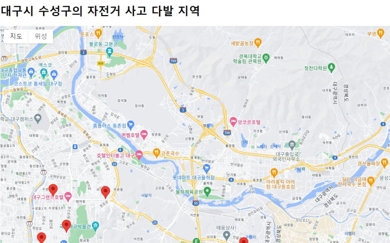

01.

GSAP 나타내기 효과
스크롤을 내리면 이미지나 텍스트가 나타나는 효과입니다.
사이트보기
02.
GSAP 핀 애니메이션
ScrollTrigger의 Pin 속성을 사용하여 만든 애니메이션입니다.
사이트보기
03.
GSAP 배경고정하기
스크롤을 내리면 배경이 고정되어 있고, 다음 섹션이 올라오는 형태의 애니메이션입니다.
사이트보기
04.
GSAP 이질감 효과
스크롤 내리거나 올릴 때마다 위치 이동을 시켜줘서 보통의 요소보다 빠르게 또는 느리게 해주는 효과입니다.
사이트보기
05.

GSAP 기본 애니메이션
GSAP의 패럴랙스 효과를 이용한 기본 애니메이션입니다.
사이트보기
06.

구글맵을 활용한 API
공공테이터 포털 오픈 API의 자전거 사고 다발구간 정보를 활용하여 대구시 수성구의 자전거 사고 다발 구간을 구글맵으로 위치표시하였습니다.
사이트보기
07.

강원천문대
웹디자인 기능사 시험을 준비하면서 만든 가상의 사이트로 팝업 기능, 자바스크립트의 이미지 페이드 아웃 기능 등을 이용했습니다.
사이트보기
08.

서울구석구석
웹디자인 기능사 시험을 준비하면서 만든 가상의 사이트로 이미지 슬라이드 기능 등을 활용한 반응형 웹페이지입니다.
사이트보기
09.
React포트폴리오
리액트 프로그램을 이용하여 만든 포트폴리오 페이지입니다.
사이트보기
10.

WordPress홈페이지
오픈소스 소프트웨어인 워드프레스를 이용하여 만든 저의 개인홈페이지 입니다. 아직 미완성이며 계속 업데이트 예정입니다.
사이트보기